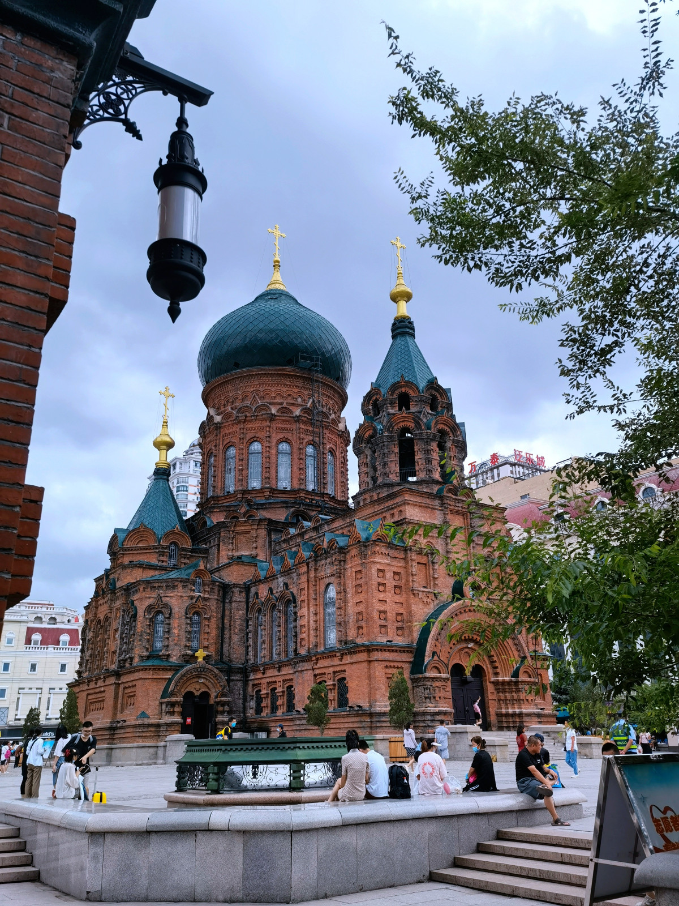
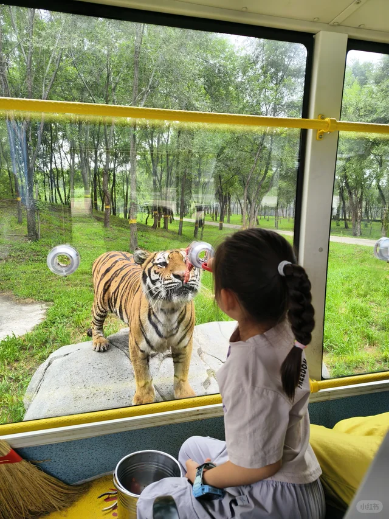
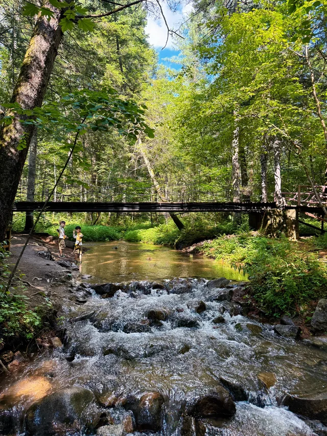
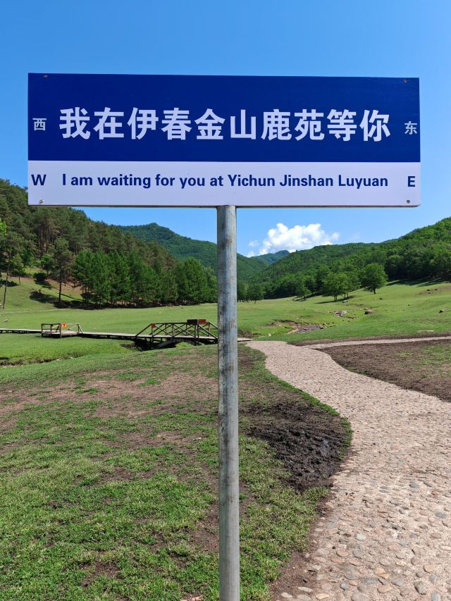
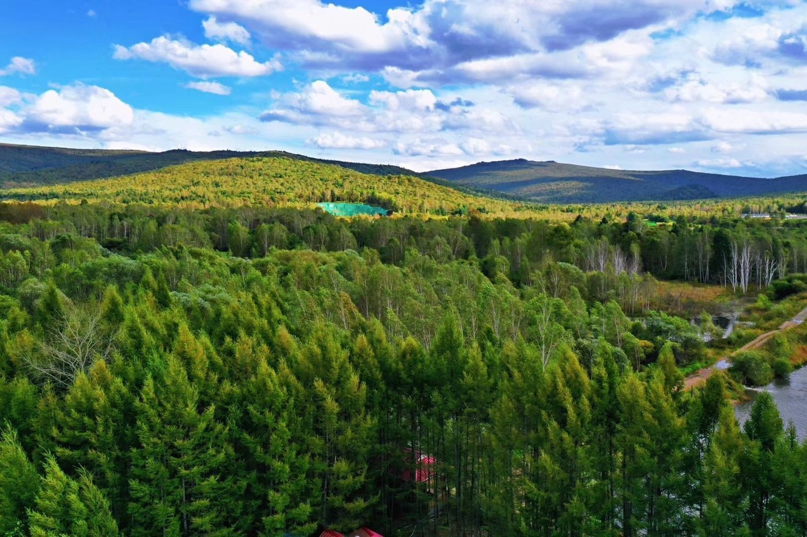
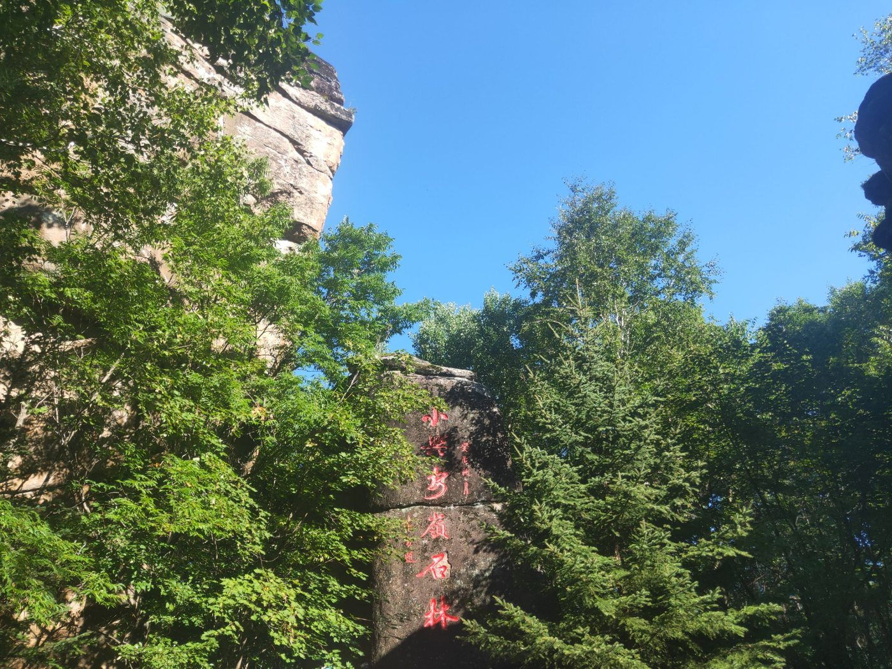
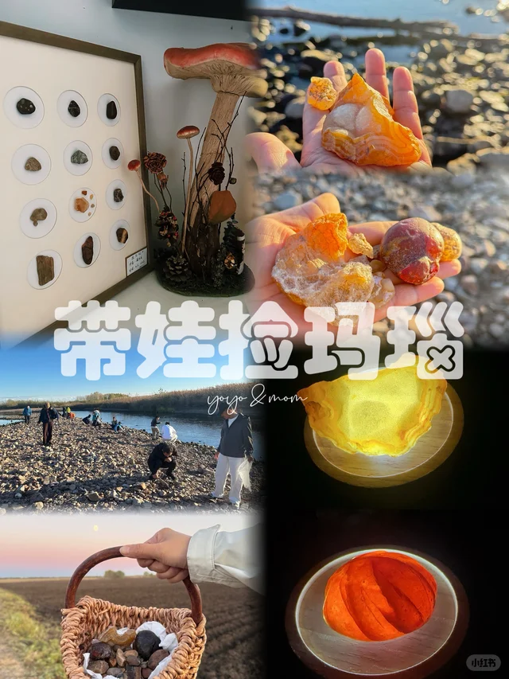
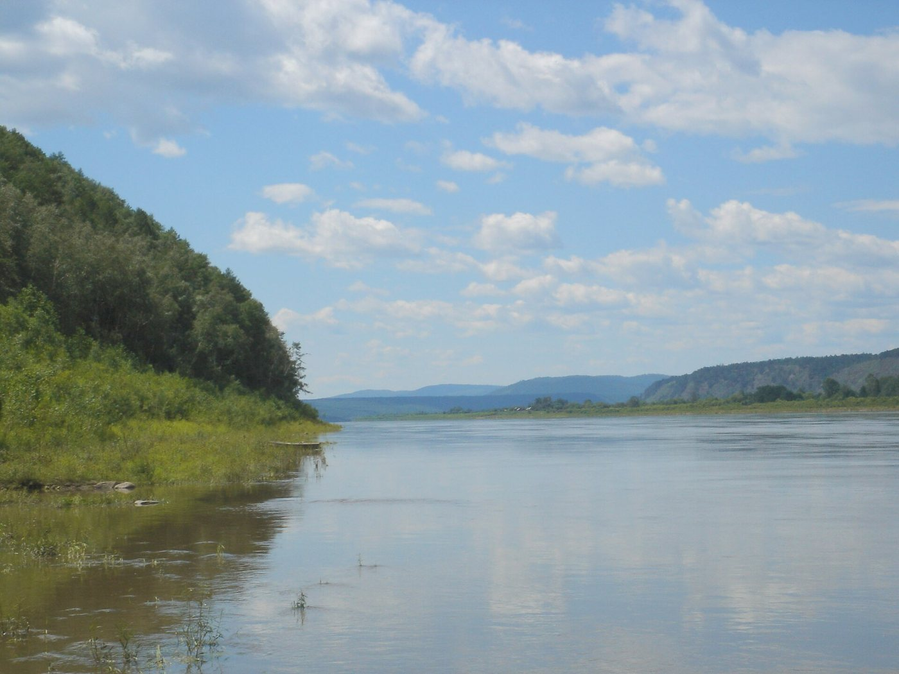

一条单向环线：飞进哈尔滨玩两天，转飞伊春，沿小兴安岭一路向北推到中俄界江嘉荫， 再折返伊春飞回深圳。全程不走回头路，自驾约 900 公里。
爸爸这次要请 7 天年假（8月20–21日、8月24–28日），中间只夹 8/22–23 一个周末， 不像原方案那样两头都压在周末上。节奏按孩子的体力排：大交通日不安排景点，景点日不赶路。

爸爸从深圳飞，深航直飞 09:25→13:50 落地；妈妈和孩子从武汉飞，南航直飞 11:15→14:30 落地—— 前后脚只差 40 分钟，机场直接会合。下午一起逛中央大街、索菲亚教堂，晚上吃锅包肉。

上午坐防护车进虎园，隔着铁网看东北虎，孩子的第一个尖叫点。 下午极地馆看白鲸和企鹅表演。

上午飞林都机场，机场提车。下午去上甘岭溪水国家森林公园， 沿溪走栈道，孩子可以下水踩石头。全程平缓，不累。

小鹿温顺，手里有零食就会围上来。园区草坪开阔，还有蹦床和烤肉营地， 整天泡在这里不会闷。往返约 120 公里。

中国面积最大的红松原始林。坐观光小火车穿林海，投喂小松鼠。 瓜子一定在市区先买，园内价格贵不少。当晚住景区内木屋。

花岗岩石林长在森林里，一块块奇形怪状，适合让孩子自己找"这块像什么"。 全程栈道，一个下午能逛一大半。

乌云河桥下的河滩捡玛瑙，真能捡到。界碑旁也有原石卖，3–5 元一颗。 下午坐界江游船，对岸就是俄罗斯。这天是全程最北端。

上午在嘉荫再捡一轮玛瑙，中午出发跑 230 公里回伊春还车， 下午飞哈尔滨，住机场附近。
深航 ZH9624，13:40 落地宝安。白天航班，到家还有半天缓冲， 第二天不至于全家瘫着。开学前留了三天缓冲。
伊春的景点分散在 50–100 公里开外，公交基本为零，这一段必须有车。 用车区间是 8月22日–27日，共 6 天、约 900 公里。
| 用车方式 | 明细 | 6 天合计 |
|---|---|---|
| 自驾租车 | SUV ¥200–300/天 + 油 ¥562 + 停车 ¥120 | ¥1,880–2,480 |
| 包车带司机 | ¥600–800/天（挂牌 ¥500 起，长线旺季上浮） | ¥3,600–4,800 |
| 混合：拼车 + 局部自驾 | 前 3 天本地「倒杯车」+ 后 3 天租车 | ≈¥1,660 |
| 选定方案 | 全程自驾租车，机场取还 | ¥2,200 |
三个人、九天、全含。这次没有用里程——不是不划算，是这批日期南航根本没有直飞可兑。 住宿沿用 7 月 27 日实查价，只是日期标签平移了 2 天，未逐一复核新日期。
| 项目 | 说明 | 金额 |
|---|---|---|
| 现金机票 | 母子武汉→哈尔滨、爸爸深圳→哈尔滨、全家伊春↔哈尔滨、全家哈尔滨→深圳 | ¥9,530 |
| 高铁 | 母子深圳→咸宁（8/15） | ¥768 |
| 住宿 | 8 晚 · 6 晚实查 + 2 晚预留（日期标签平移，未逐一复核） | ¥2,289 |
| 租车 + 油费 | 6 天 SUV + 900km 油费 + 停车 | ¥2,200 |
| 吃饭 · 门票 · 玩乐 | 9 天 × 三人 | ¥5,099 |
| 实际现金支出 | 本次 0 里程使用 | ¥19,886 |
2026年7月27日携程实查，2大1小口径，含钻石贵宾价。日期标签已按新行程平移 2 天，价格本身未重新逐日核对。
| 入住 | 城市 | 酒店 | 价格 | 口径 |
|---|---|---|---|---|
| 8/20 | 哈尔滨·中央大街 | 橙居智慧（含早） | ¥330 | 沿用实查 |
| 8/21 | 哈尔滨·中央大街 | 龙瑞程·中央大街 | ¥321 | 沿用实查 |
| 8/22 | 伊春市区 | 如家艾扉 4.7分 · 含早 · 儿童免费入住 两晚合计 ¥359 | ¥180 | 沿用实查 |
| 8/23 | 伊春市区 | ¥179 | 沿用实查 | |
| 8/24 | 五营·景区内 | 绿野仙居木屋 需电话订 | ¥400 | 预留 |
| 8/25 | 汤旺河 | 林区民宿 需电话订 | ¥400 | 预留 |
| 8/26 | 嘉荫·江边 | 屿森酒店（江边公园俄罗斯风情园店） | ¥158 | 沿用实查 |
| 8/27 | 哈尔滨 | 龙瑞程·中央大街 | ¥321 | 沿用实查 |
| 8 晚合计（6 晚沿用实查 ¥1,489 + 2 晚预留 ¥800） | ¥2,289 | |||
| 航段 | 2026-07-27 实查结果 |
|---|---|
| 8/20 深圳→哈尔滨（爸爸） | 当天无南航直飞，只有深航 ZH9621 09:25→13:50 |
| 8/28 哈尔滨→深圳（全家） | 当天无南航直飞，只有深航 ZH9624 09:00→13:40 |
| 结论 | 南航里程只能兑南航实际承运的航班，这两段都没有，80,000 分本次用不上 |
这批日期没有里程票要抢，但现金票和高铁的窗口还是在收紧。
深航 ZH9621，8/20 09:25→13:50，¥1,070。当天无南航直飞，只能买这班。
南航 11:15→14:30，¥1,060×2。特意选这班晚一点的，为了跟爸爸前后脚 40 分钟到—— 早班 07:45 那趟只要¥590/人，但落地要早 3 小时40分。
参考此前 8/14 出发对应 7/31 开票的经验，8/15 出发预计 8 月 1 日前后开票—— 这是按经验推算，未逐一验证，建议 7/31 起每天查一次。
旺季车少。悟空租车，机场取还，SUV，8/22 取车。送车上门加 ¥80 但省时间。
这两晚携程订不到。五营找绿野仙居（住进去后同一张门票次日还能用）， 汤旺河找林区民宿。订的时候问一句有没有加湿器——林区夜里干。
这轮日期改动后，机票总额涨了约 ¥4,620（从用里程后的 ¥15,266 涨到纯现金 ¥19,886）， 原因有两个：① 8/20 和 8/28 这两天南航都没有直飞，原本能兑的 59,900 里程用不上了； ② 妈妈孩子那班特意选了贵 ¥940 的晚班，为了跟爸爸凑近落地时间——这是你明确要的，不是失误。
住宿 8 晚的价格是从原日期直接平移标签过来的，只有日历日期变了， 没有针对 8/20–8/27 这批新日期逐一重新查价。五营（8/24）和汤旺河（8/25）两晚仍是预留价， 携程搜不到这类景区内和林区住宿，需要电话订。
爸爸的请假从 5 天变成了 7 天。原方案 8/22–8/30 卡在两个周末之间； 新方案 8/20–8/28 中间只夹 8/22–23 一个周末，工作日缺口更大。
价格含钻石贵宾折扣。 这些是用你的账号查到的价，普通用户看到的会略高一点。